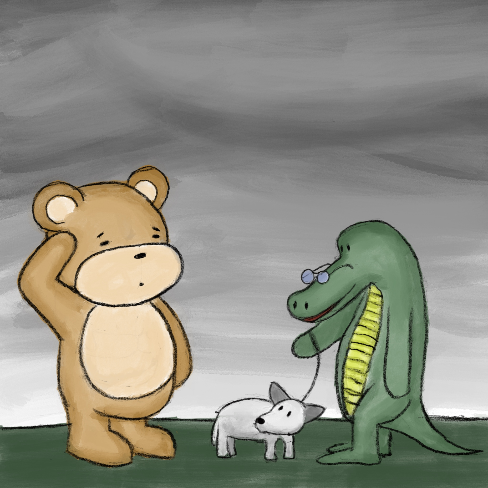
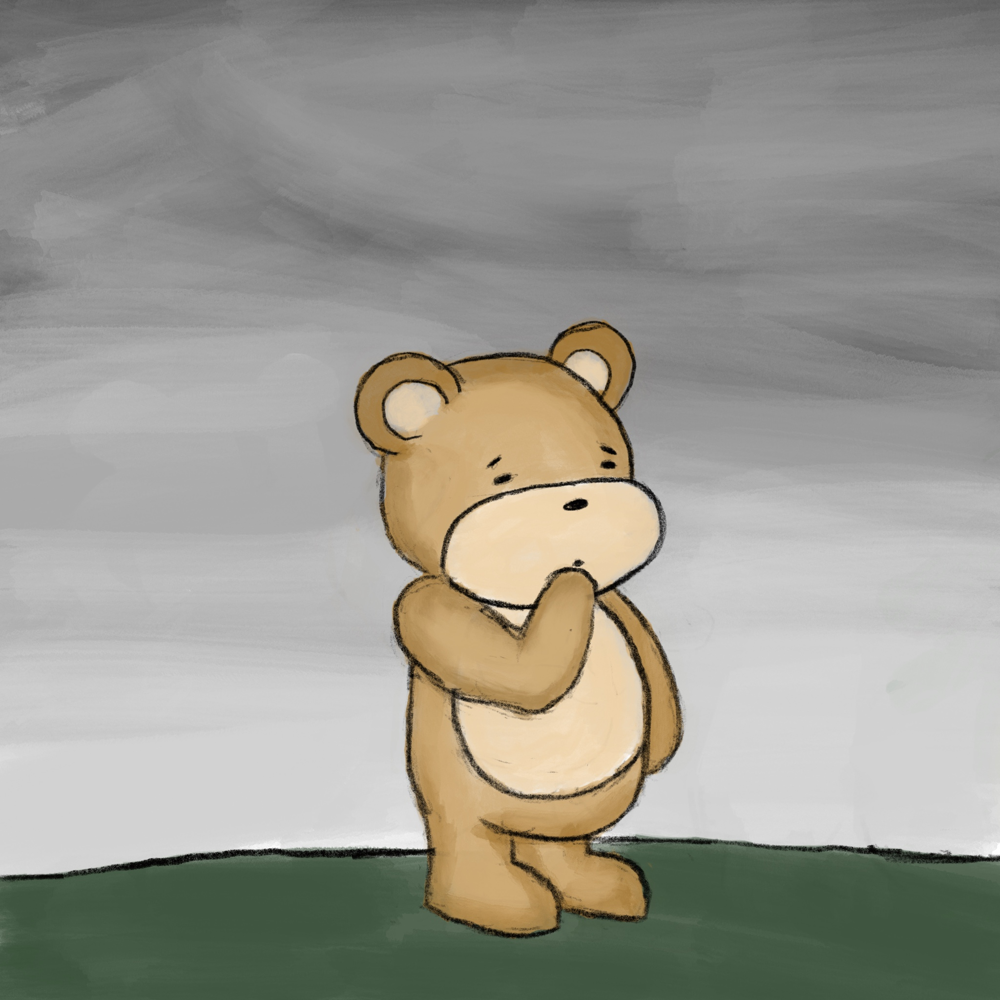
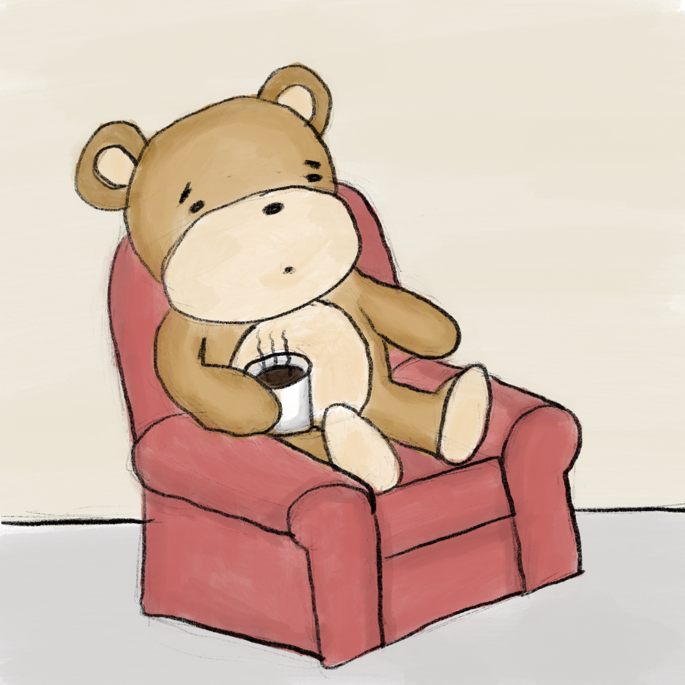

“Well let’s go home then, Tata,” the alligator said, hooking an old leather leash to the little dog’s collar as the bear set him down. The dog kept looking back at the bear, and he couldn’t help but scratch his head, wondering at this unlikely pair. The alligator shuffled away, and instantly the bear felt the loss of the warm presence that had snuggled so easily into his heart. “I miss the little pup already,” the bear said softly to himself. #79

As the alligator walked away with the little dog, the bear put his hand to his chin and pondered for a moment. “When that little dog snuggled into my arms I felt such pure love,” he thought to himself, “and just like that it’s gone. Is that what I’m missing? Is that what I’m looking for? Am I happier for that experience, or more sad now that it has passed?” He sighed a long bear sigh.“What a tumultuous day it has been. Maybe I just need to go home and relax with a nice cup of tea.” #80

Finally at home, the bear settled into his favorite chair and thought back on his day with a warm mug in his little paw. “So much has happened today, and I’ve learned so much,” the bear thought, “but I still feel so lonely! Though it’s that funny kind of lonely where I just want to be by myself with my tea. Hmmm, how strange that is. I sure do miss that little dog, though - he warmed my heart right up. ” #81